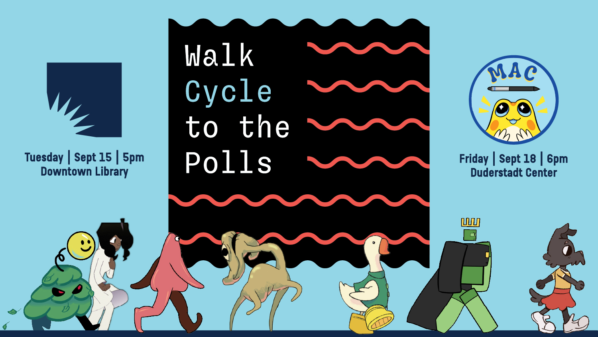

Events
Animation workshops, master classes, and tournament dates — all in one place.
Project Events
Democracy Week Workshops

Ever wonder how animators make a character walk? Join Walk Cycle to the Polls for one of two hands-on sessions where you’ll pose your own hand-drawn character in a 2-, 4-, or 8-frame walk cycle. No drawing or animation experience required! Bring your own device to animate digitally, or use a provided paper template. Your finished drawing gets scanned and turned into a playable avatar inside a custom-built web game, competing in community tournaments at early voting sites this October.
There are two workshop dates:
- Tuesday, September 15, at 5 p.m. at the Ann Arbor District Library, Downtown Branch — National Voter Registration Day
- Friday, September 18, at 6 p.m. at the Duderstadt Center, Room 3358 — hosted by the Michigan Animation Club
Held during the University of Michigan’s Democracy Week, this free workshop is part art class, part civic celebration — linking the history of marching for voting rights to the simple joy of making something move. On-site voter registration resources will be available. Come bring a character to life!
Master Classes, Video Game Tournaments & a Lecture


October 28: Legendary animator James Baxter leads character design and walk cycle master classes for animation students at the Stamps School of Art & Design. October 29: Baxter delivers the Penny Stamps Distinguished Speaker Lecture at the Michigan Theatre. A live mini-tournament showcases student animations to the public.
Throughout the early voting period: Full-scale interactive game installations at the UMMA early voting site and the North Campus early voting site. Community members race their custom avatars to the virtual polls before casting physical ballots.